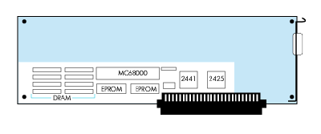
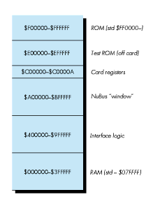
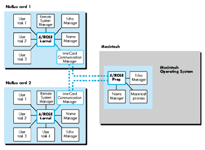
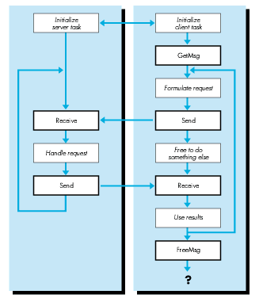
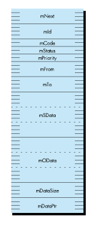

The Macintosh® Coprocessor PlatformTM provides a foundation for connectivity
products such as the Serial NB Card, the TokenTalk NB Card, and the Coax- Twinax
Card. Its operating system is A/ROSE, the Apple Real-time Operating System
Environment. This article introduces you to the Macintosh Coprocessor Platform and
A/ROSE, and gives you a taste of what is involved in developing a connectivity product
on this foundation.
The Macintosh Coprocessor Platform and A/ROSE together provide a hardware and
software foundation for developers who want to create NuBus TM add-on cards for the
Macintosh II family of computers. The developer's guide that comes with the kit is a
hefty 400-page tome. If you're curious about how NuBus cards are built but not
curious enough to tackle the developer's guide, read on. This article gives you an
overview of the origins of the Macintosh Coprocessor Platform, its architecture, and
details of its real-time, multitasking, message-based operating system, A/ROSE. It
shows you some A/ROSE code. And it shows you how to experiment with some A/ROSE
applications included on the Developer Essentials disc.
When development of various networking and communications products for the
Macintosh II started at Apple, around 1987, it became obvious that the Macintosh
Operating System didn't meet these products' needs for processing power and operating
system capability. After all, the Macintosh OS was designed for human interaction
rather than for connectivity to mainframe computers. It is not real-time (interrupts
can be disabled for longer than is acceptable for fast interrupt-driven input/output),
and it aims to provide a pleasant and efficient graphic user interface, rather than
processor-intensive I/O handling. The solution was to make an "intelligent" NuBus
card, with its own 68000 processor, its own working space in RAM, and its own basic
operating system services; and to design this card not only as a basis for Apple's own
products, but also as a tool for NuBus expansion card developers. The result was the
Macintosh Coprocessor Platform. Its operating system, A/ROSE, was designed to
respond to the needs of connectivity products, complement the capabilities of the Mac
OS, and yet be generic enough to become the foundation for a new breed of
message-based, distributed software architectures. The work on A/ROSE started in
August 1987, and the first version was operational by February 1988.
Today, developers can build on this platform in designing products for communications
and networking, data acquisition, signal processing, or any other heavy-duty
processing. Time- consuming and/or time-critical tasks can be offloaded from the
main logic board to a dedicated processor on the NuBus card. This increases the overall
computational speed, of course, and allows for faster response times in the foreground
applications. Moreover, unlike the standard Mac OS, A/ROSE provides the real-time
and multitasking capabilities required for handling multiple communications
protocols.
Nevertheless, A/ROSE on a Macintosh Coprocessor Platform still depends on the Mac
OS (and its limitations--see Technical Note #221) for transferring large amounts of
data across the NuBus through a driver to a Macintosh application. This means that
ample data buffering (and careful error handling) should be provided on the card if the
project requires high-performance data transfers. As you'll see in the next section,
the card provides plenty of room for large buffers.
The most prominent feature of the Macintosh Coprocessor Platform card is all the
empty space on it, inviting hardware developers to heat up their soldering irons and to
put plenty of advanced hardware on it. A complete master-slave NuBus interface comes
for free, implemented by means of two chunky Texas Instruments ASICs
(application-specific integrated circuits), 2441 and 2425. This interface manages to
give the on-board MC68000 access to the whole 32-bit NuBus address space (by
means of an address extension register). Conversely, the 24-bit address space of the
local MC68000 can be accessed directly from across the NuBus. Custom hardware on
the card can be enabled to take over the 68000 bus and even go to the NuBus, but
A/ROSE tasks usually take care of servicing chips on the board, and communicate with
the higher levels of the software design.

Figure 1 The Macintosh Coprocessor Platform Card

Figure 2 Memory Map of the Macintosh Coprocessor Platform With A/ROSE Running
The MC68000 on the Macintosh Coprocessor Platform card runs at 10 MHz (the
NuBus clock speed) without wait states. Standard 512K of dynamic RAM is expandable
up to 4M. Two 32K EPROMs contain the declaration ROM code needed to make the
SlotManager happy, plus some pieces of code to help the MC68000 out of a Reset and to
provide low-level diagnostic routines. The card also carries a programmable timer,
used by A/ROSE for scheduling time-sliced tasks.
A/ROSE is a minimal, multitasking, distributed, message-based operating system.
Here's what this means, in real terms:
It's minimal: The module that provides basic A/ROSE functionality, the A/ROSE
kernel, fits into 6K; and a complete standard configuration of A/ROSE on a NuBus card
amounts to only 23K of code and takes up only about 48K of buffer space. This leaves
more than 400K for your code on a standard 512K RAM card. Still, as you will see,
A/ROSE is a strong software platform to build on.
It's multitasking: A/ROSE does pre-emptive multitasking, with round-robin task
scheduling (taking 32 priority levels into account).
It's real-time: A/ROSE offers 110 microseconds context switch time, with 20
microseconds of latency (guaranteed interrupt response time).
It's distributed and message-based: The A/ROSE software can be present on
several cards, and it is completely autonomous and independent on each card. Tasks
defined by users and by A/ROSE communicate with each other, even across the NuBus
to other slots or the Mac ® OS, by means of messages. These messages can carry
pointers to data buffers along with them. Thousands of such messages can be passed per
second (fastest from task to task within a card, and slower, of course, between
different slots).
The A/ROSE kernel is responsible for task scheduling, interprocess communication,
and memory management. The calls that correspond to these responsibilities are shown
in Table 1. The standard configuration also includes utilities for bookkeeping and timer
services. These utility functions are carried out by the A/ROSE managers: the Name
Manager, the InterCard Communication Manager, the Remote System Manager, the
Echo Manager, the Timer Library, the Trace Manager, and the Print Manager.
Table 1
The Ten A/ROSE Primitives
| Name | Description |
| AROSEFreeMem() | Frees a block of memory* |
| FreeMsg() | Frees a message buffer* |
| AROSEGetMem() | Allocates a block of memory* |
| GetMsg() | Allocates a message buffer* |
| Receive() | Receives a message+ |
| Reschedule() | Changes a task's scheduling mode |
| Send() | Sends a message* |
| SpI() | Sets the hardware priority level |
| StartTask() | Initiates a task |
| StopTask() | Stops a task |
Notes:
* Implemented in A/ROSE Prep with the same parameters.
+ Implemented in A/ROSE Prep with a supplementary parameter.
The A/ROSE architecture, shown in Figure 3, is completed by A/ROSE Prep, a version
of A/ROSE that runs on the main CPU under the Macintosh Operating System and that is
necessary to establish communication between the Mac OS and A/ROSE. The A/ROSE
Prep file has the file type INIT, and contains among its numerous resources a DRVR
named .IPC (for interprocess communication), and an INIT that executes at INIT31
time and basically installs and opens the .IPC driver. The .IPC driver takes care of the
communication of Mac OS processes with A/ROSE tasks. Nothing can be downloaded to
the Macintosh Coprocessor Platform if the A/ROSE Prep file is not in the System
Folder: it contains card-dependent information needed for the download routines to
succeed. The programming interface to the .IPC driver (described in the A/ROSE
header files arose.h, os.h, managers.h, iccmDefs.h, ipcGDefs.h, and provided through
the library IPCGlue.o) mimics that of A/ROSE itself as closely as possible, providing
the look and feel of A/ROSE even if there is no A/ROSE around. More practically
speaking, with the A/ROSE Prep file in your System Folder, you can do a lot of
interesting A/ROSE experiments even without a Macintosh Coprocessor Platform. For
your convenience, the A/ROSE Prep file is included in the A/ROSE folder on the
accompanying Developer Essentials disc.

Figure 3 The Architecture of A/ROSE
Interprocess communication in A/ROSE takes place by means of messages passed back
and forth between tasks. A typical example consists of a client/server relationship
between A/ROSE program modules, as illustrated in Figure 4 on the next page.
The client task needs to know that the required server task exists; thus, the server
task is initialized before the client task. Next, the client task issues a GetMsg() call
to request a message buffer from a preallocated pool of message buffers that is
maintained by A/ROSE and the size of which is specified by the user. After the message
is filled with addressing information, command codes, and parameters, it is sent to the
server task. At this point, the sending task loses rights to the message buffer, and
should not use it again until it comes back through a Receive() call. On the other
side, the server task usually sits in an infinite loop, waiting for messages requesting a
service, handling these requests, and sending replies.

Figure 4 How Interprocess Communication Takes Place in A/ROSE
After receiving the reply, the client task can reuse the message buffer for subsequent
requests, or release the buffer by means of a FreeMsg() call and go ahead with other
business.
A message provides up to 24 bytes of user data, and is fixed length and asynchronous.
If the data to be sent does not fit into the message proper, then it can be put anywhere
in the sender's memory and the address and size of the data area can be passed in the
message.
Each message is identified by a message ID and a message code. The message code is
defined by agreement between the sender and the receiver. A convention followed in
A/ROSE is for outgoing messages to use an even-numbered code and for replies to those
messages to set the code to the next odd number.
The structure of an A/ROSE message is shown in Figure 5.

Figure 5 The Structure of an A/ROSE Message (54 Bytes) In C, the messsage
structure is declared as follows:
struct mMessage {
struct mMessage *mNext;
/* Used to chain messages internally. */
long mId; /* Unique identifier for a message. */
short mCode; /* User-defined message code. */
short mStatus; /* Message return status. */
unsigned short mPriority; /* Range is 0 (low) to 31 (high). */
tid_type mFrom; /* Task ID of task sending message. */
tid_type mTo;
/* Task ID of task to which msg. is sent. */
unsigned long mSData[3];
/* Used for sender's private information. */
unsigned long mOData[3];
/* Used by receiver to send data back. */
long mDataSize;
/* Size of data to which mDataPtr points. */
char *mDataPtr; /* Pointer to variable length data. */
};
Tasks in A/ROSE accept and reply to messages. A task is identified to A/ROSE by a task
ID, which is a 32-bit field of type tid_type. Each task also has an associated name and
type that is readable by humans. This is very close to the NameBinding protocol of
AppleTalk in spirit and implementation.
Tasks are started with a call to the A/ROSE StartTask() primitive. Tasks have one of
32 priority levels, with level 31 as the highest priority and level 0 as the lowest.
Tasks run either in slice mode or in run-to-block mode. In slice mode, a task runs for
one major tick (about 50 milliseconds), and then relinquishes control of the CPU to a
task of higher or equal priority, if one is available. In run-to-block mode, a task
runs until it is blocked or until it completes. A task becomes blocked if it issues a
Receive() call for a message that is not available. New tasks are scheduled for
execution in the order of priority; a task is run only if no eligible tasks of higher
priority are waiting.
A manager in A/ROSE is just another task, which does its job in accepting and replying
to messages with predefined message codes. As mentioned earlier, the A/ROSE
managers are the Name Manager, the InterCard Communication Manager, the Remote
System Manager, the Echo Manager, the Timer Library, the Trace Manager, and the
Print Manager. The first four are discussed in greater detail here. Use of the Name
Manager and the InterCard Communication Manager is demonstrated in the sample
program ShowTasks and in "Building a Download File," later in this article.
THE NAME MANAGER
The Name Manager maintains a cross-reference between task IDs and their associated
name and type. User tasks can register themselves with the Name Manager by
specifying an object name and an object type, and then other tasks that need to refer to
this task can look up the task by name and type by calling the A/ROSE Lookup_Task()
utility. Conversely, for a given task ID, the Name Manager brings back the object name
and object type if you send it a message with mCode = NM_LOOKUP_NAME.
The Name Manager also provides notification services. These services include signaling
when a NuBus card is shut down or started up, checking to see if a task is present or
not, and signaling when a task terminates.
THE INTERCARD COMMUNICATION MANAGER
The InterCard Communication Manager (ICCM) enables user tasks to communicate
with tasks on other NuBus cards or on the main logic board. There are only three
message codes a user task may send to the ICCM: ICC_GETCARDS, ICC_DETACH, and
ICC_ATTACH.
ICC_GETCARDS returns a long integer for each of the sixteen possible NuBus slots. A
positive number represents the task ID of the Name Manager running under A/ROSE on
a Macintosh Coprocessor Platform card. For slot = 0, this is the task ID of the Name
Manager incorporated in A/ROSE Prep, under the Macintosh OS. The task ID of a Name
Manager is required to look up specific tasks on any card on the NuBus.
The message codes ICC_DETACH and ICC_ATTACH are provided for NuBus cards that
get power from a source other than the NuBus, so that when the power to the Macintosh
main logic board is turned off, the NuBus card continues to function. With these
message codes, you can delink the NuBus card from the outside world, thus preventing
access over the NuBus.
THE REMOTE SYSTEM MANAGER
The Remote System Manager running on a NuBus card enables tasks running on any
other NuBus card or the main processor to execute certain A/ROSE primitives
remotely. The A/ROSE primitivesA/ROSEGetMem(), A/ROSEFreeMem(),
StartTask(), and StopTask()are supported, enabling tasks to be downloaded,
started, and stopped dynamically. The Remote System Manager registers itself with the
Name Manager with the name RSM and the type RSM.
THE ECHO MANAGER
The Echo Manager echoes all messages sent to it. This can be very useful in the initial
stages of testing A/ROSE applications.
All code running on a NuBus card is downloaded to the card's memory from the main
logic board. Code can be downloaded statically or dynamically, to one or multiple cards.
In static downloading, the user builds the entire memory image of the application to be
run on the card by linking the code with A/ROSE object files. The main program is
user code; it callsosinit() to initialize A/ROSE and osstart() to start the
operating system. Before starting the operating system, the main program must start
all the necessary managers and user tasks. The memory image is downloaded onto the
NuBus card using the static downloading facility, which halts the card, downloads the
code, and starts the card again.
In dynamic downloading, the user downloads a generic version of A/ROSE onto a NuBus
card by invoking StartAROSE(). Once the A/ROSE kernel and requisite managers are
up and running, the user can download tasks using the dynamic downloading facility.
A/ROSE provides a number of ways to download the code. The MPW tool Download takes
the pathname of a file as parameter, and tries to download it to every Macintosh
Coprocessor Platform card it finds (if used without the optional slot parameter ). This
is convenient during the development cycle under MPW. Another possibility is to use
the Macintosh application ndld. Finally, you can use the NewDownload() routine
directly from within your own application. (See the sidebar on the next page for a
description of Download and ndld.)
You'll find some samples of A/ROSE programming in the A/ROSE folder on the
Developer Essentials disc. You can run these applications under MultiFinder after
booting with A/ROSE Prep in the System Folder. With the exception of the downloading
operation, all these applications will run whether or not your machine has a
Macintosh Coprocessor Platform card installed.
You can take a closer look at the complete source code on the Developer Essentials
disc. I'll show and discuss some fragments of it here.
TASKSAMPLE AND CLIENTAPPLI
The TaskSample application opens a window and waits for A/ROSE messages. The
ClientAppli application looks for a server named myTaskName and sends a message on
each button-click. The server TaskSample simply returns each message it receives to
the sender, and ClientAppli displays the number of messages it has sent and received.
To experiment with producing alerts or error messages, launch both applications,
then quit TaskSample and continue sending messages to it; restart it again and
continue; or hit Command-Q immediately after the Send button, so that ClientAppli has
gone by the time TaskSample sends the reply.
If you run the applications, you will notice a certain delay in messages being passed
back and forth. This has to do with the SleepTime value (selected in the SleepTime
menu), which is passed to theWaitNextEvent() call under MultiFinder. In the two
sample programs, the A/ROSE PrepSend() and Receive() services are called only
once at each tour through the event loop. Depending on the SleepTime value, the
background application more or less slows down, and this explains the delay observed
on the screen.
SHOWTASKS
ShowTasks is a tool that shows all the A/ROSE tasks that are "visible" in the machine
(there might be "invisible" A/ROSE tasks, too). It goes through all sixteen NuBus
slots, looks for all visible tasks, and displays them by task identifier, object name,
and object type. Sample output of this program might look like the following (which
reflects the situation where TaskSample and ClientAppli are running):
slot = $0 : 00000003: name "echo manager", type "echo manager" 00000004: name "myTaskName", type "myTaskType" 00000005: name "ClientApp", type "ClientType"
This indicates that there are no A/ROSE tasks running on a NuBus card at this time;
slot $0 represents the good old main logic board where the A/ROSE Prep driver does
its best to make us believe that there is an instance of A/ROSE.
Now let's look at some of the source code. For the sake of clarity in the following
fragments, error handling is completely suppressed. Needless to say, nobody should
ever try to compile this sort of code! The source code on the CD gives a more realistic
idea of A/ROSE programming. Here are the outlines of main() and the two basic
subroutines AskICCM() and NameLookup(), with explanatory text following the code:
static tid_type cards[16]; // Place for 4 bytes per slot.
main()
{
short slot, index;
tid_type tid;
(void) OpenQueue(nil); // Set up a message queue for me.
AskICCM();
// Request Name Manager TID for each slot, store in cards[].
for (slot=0; slot<16; slot++) {
if (cards[slot] > 0) { // Name Manager TID is OK.
printf("\nSlot = $%X :\n",slot);
index = 0;
while (tid = Lookup_Task("=", "=",
cards[slot], &index))
// Ask Name Manager for info about registered tasks.
NameLookup(cards[slot], tid);
}
}
CloseQueue(); // Be nice with A/ROSE Prep.
} // End main().
void AskICCM()
{
mMessage *m;
m = GetMsg();
m->mTo = GetICCTID();
m->mCode = ICC_GETCARDS;
m->mDataPtr = (char *) cards;
m->mDataSize = sizeof (tid_type) * 16;
Send(m);
m = Receive(OS_MATCH_ALL, OS_MATCH_ALL, ICC_GETCARDS+1,
OS_NO_TIMEOUT, 0);
// SlotInfo is now in cards[0..15] (if nothing failed!).
FreeMsg(m);
} // End AskICCM().
#define bufferSize 512
void NameLookup(tid_type ntid, tid_type tid)
// ntid = Name Manager TID.
// tid = ID of the task for which we request the name.
{
struct pb_lookup_name *lnam_ptr; // (See text.)
char buffer[bufferSize];
mMessage *m;
m = GetMsg();
m->mTo = ntid;
m->mCode = NM_LOOKUP_NAME;
m->mDataPtr = buffer;
m->mDataSize = bufferSize;
lnam_ptr = (pb_lookup_name *) &buffer;
lnam_ptr->lnm_index = 0;
lnam_ptr->lnm_tid = tid;
lnam_ptr->lnm_RAsize = bufferSize -
(sizeof(pb_lookup_name) - sizeof(ra_lnm));
Send(m);
m = Receive (OS_MATCH_ALL, OS_MATCH_ALL, NM_LOOKUP_NAME+1,
OS_NO_TIMEOUT, nil);
DisplayTaskInfo(lnam_ptr); // Lots of silly string handling.
FreeMsg(m);
} // End NameLookup().
The OpenQueue() call is needed to make use of the A/ROSE Prep services; it takes a
procedure pointer as parameter. If a procedure is specified, it gets called repeatedly
during a blockingReceive() request, which avoids blocking the machine during
waiting. In our case, we don't use blocking receives, and don't need this feature. By the
way, OpenQueue() returns a task identifier that will be ours for the rest of the
process.
We have to deal with the InterCard Communication Manager, inAskICCM(), and the
Name Manager, indirectly inLookup_Task() and directly in NameLookup(). First,
we want to ask the InterCard Communication Manager what it knows about the sixteen
NuBus slots. Naturally, we send a message.The local variable m is declared as a
pointer to the struct mMessage (note the spelling, in order to distinguish it from
themessage field in an EventRecord). The GetMsg() call, one of the ten A/ROSE
primitives, is in this case an A/ROSE Prep service.GetMsg() returns a pointer to
this message structure, which has already been partially initialized: mId is a
statistically unique identification number for the particular message, and mFrom has
already been filled in with the sender's task ID (the number returned by
OpenQueue(), or by the utility GetTID()).
We need to identify the addressee in the mTo field and we need to specify mCode =
ICC_GETCARDS (this constant is defined in the include file managers.h) in order to
request information about Macintosh Coprocessor Platform cards in the machine. On
receiving a message with this mCode, the ICCM expects in mDataPtr a pointer to 64
bytes (according to mDataSize), and fills the array cards[0..15] of tid_type for each
slot with a value
The rest is easy: For each Name Manager TID, a repeated call toLookup_Task()
returns successively all identifiers of tasks that registered correctly with the Name
Manager. The variable indexis initially set to zero and then passed by address; it is an
internal value that must be passed back to A/ROSE unchanged on subsequent calls to
Lookup_Task(). This call is an example of an A/ROSE utility call, which hides the
underlying mechanism of sending a message with a specific mCode and mDataPtr to a
manager, and getting the result back through a Receive() call.
Sending a message now to the Name Manager in the current slot with mCode =
NM_LOOKUP_NAME and with mDataPtrpointing to an appropriate buffer, brings back
the object name and type name of the task, which is finally displayed.
BUILDING A DOWNLOAD FILE
To download code to a NuBus card, you have to build a code resource. I will reproduce
and discuss the required code (file osmain.c) in a simplified form here.
main ()
{
struct ST_PB stpb, *pb; // Start parameter block.
// Init OS with cMaxMsg messages and cStackOS stack.
osinit (cMaxMsg, cOSStack);
pb = &stpb;
StartNameServer(pb); // The Name Manager.
StartICCManager(pb); // You guess it!
StartmyTask(pb); // And our sample task.
// Start all other required managers and tasks.
// Start operating system.
osstart (TICK_MIN_MAJ, TICKS_PS);
// Should never get here!
} // Main().
void StartmyTask(struct ST_PB *pb)
{
pb->CodeSegment = 0;
pb->DataSegment = 0;
pb->StartParmSegment = 0;
pb->InitRegs.A_Registers [5] = GetgCommon() -> gInitA5;
pb->ParentTID = GetTID();
pb->stack = 4096;
pb->heap = 0;
pb->priority = 10;
pb->InitRegs.PC = myTask; // Entry point of myTask.
if (StartTask (pb) == 0) // If the task does not get started,
illegal (); // go debugging.
}
The routines StartNameServer(pb) andStartICCManager(pb) are quite similar
(except for slight variations in some parameters and the priority level)
toStartmyTask(pb). So this is the code that will be downloaded to the card. The calls
osinit() and osstart() are only meaningful in this context of an initial load of the
card. The first call takes two parameters whose default values are cMaxMsg = 500
(maximum number of available message buffers) and cOSStack = 4096 (size of OS
stack). In many cases, the cMaxMsg value in particular can be safely diminished,
which allows optimization of memory usage on the card. The second call, osstart
(TICK_MIN_MAJ, TICKS_PS) launches A/ROSE, with default values for the number of
time-slicing ticks per second, and for a subdivision of major ticks into minor ticks.
In between these two calls, all other required tasks need to be initialized by means of
their start parameter block; the required minimum consists of the Name Manager task
(the linker finds its code under the name name_server in the library OS.o), and
the InterCard Communication Manager task (again, its code is in OS.o). In our
example, we added our own myTask, whose source code file is compiled separately
(compare this with the routine TaskProcessing() in the TaskSample program):
static char my_object_name [] = "myTaskName";
static char my_type_name [] = "myTaskType";
void myTask()
// All it does at this point is to register with the Name Manager
// (in order to be recognized by possible clients looking for it)
// and then just send back the messages it receives.
{
mMessage *m;
if (!Register_Task (my_object_name, my_type_name,
Machine_Visible))
illegal (); // Go debugging: something mysterious happened.
while(1) // Forever !
{
m = Receive(OS_MATCH_ALL, OS_MATCH_ALL, OS_MATCH_ALL,
OS_NO_TIMEOUT);
if (m) {
if (m->mStatus != 0) {
// What happened? A real program would investigate but
// we'll just get rid of it here
FreeMsg(m);
}
else {
switch (m->mCode) {
case DUMMYCODE:
// Is there something to do with this message?
break;
// Handle here all the message codes you specified in your
// design.
default:
m->mCode |= 0x8000; // Unrecognized message code;
m->mStatus = OS_UNKNOWN_MESSAGE;
// defined in "managers.h."
break;
} // Switch.
// Send message back.
SwapTID(m); // Swap mFrom and mTo fields.
m->mCode++; // Response is one greater, by convention.
Send (m);
} // Message status was OK.
} // There was a message.
} // While.
} // End myTask().
Finally, we need to put everything together. The following MPW shell commands do the
trick. Adopting the convention on the A/ROSE distribution disks, we'll use the filename
Start for what we will download. I recommend defining the MPW shell variables
AROSE, AROSEBin, and AROSEIncl in a UserStartup file, which holds the
corresponding folder pathnames.
C osmain.c -i "{AROSEIncl}"
C myTask.c -i "{AROSEIncl}"
Link -t 'DMRP' -c 'RWM ' ∂
-o start ∂
osmain.c.o ∂
myTask.c.o ∂
"{AROSEBin}"OS.o ∂
"{AROSEBin}"osglue.o
Finally, we need to download the file to the available Macintosh Coprocessor Platform
cards in your machine, by means of the Download tool:
"{AROSE}Downloader:Download" start
The tool should reply with
Segment of size 00000040 is downloaded Segment of size 00000054 is downloaded Segment of size 00004D44 is downloaded
Now it's time to come back to our tool ShowTasks:
showtasks slot = $0 : $00000003: name "echo manager", type "echo manager" slot = $D : $0D000001: name "name manager", type "name manager" $0D000003: name "myTaskName", type "myTaskType"
. . . and to go ahead and send messages to myTask on a Macintosh Coprocessor Platform
card. To try this, launch ClientAppli again, but this time without the TaskSample
application running. ClientAppli now finds the "server" named
myTaskName
in its slot, and messages sent to it are returned as expected.
A MANDELBROT SETS EXERCISE
The downloaded file in the Macintosh Coprocessor Platform card works, but it gets
boring fast: our server task is quite lazy, and doesn't do anything besides echoing our
messages. For a more interesting programming exercise, open the MCPMB folder. The
program you'll find there computes Mandelbrot (MB) sets in parallel processing,
involving as many Macintosh Coprocessor Platform cards as you can put into your
machine.
For each line to be computed, a message is sent to an MBTask, carrying along the
required parameters and a pointer to where the line fits into the bitmap. The MBTask
allocates a local buffer each time (for pedagogical reasons, I didn't optimize the design
too much) and sends the computed data back over the NuBus by means of a NetCopy()
call. Have a look at the source code on the CD, play with it, and let me know what you
did to improve on the error handling and some other flaws in it.
This article has given you an idea of how to find your way around the Macintosh
Coprocessor Platform and A/ROSE. You now know something about the origins,
architecture, and implementation of this generic hardware and software foundation,
and have seen some samples of A/ROSE programming. If you want to go on from here,
the APDAlog ® contains everything you need to know to order the complete Macintosh
Coprocessor Platform Developer's Kit, or the A/ROSE Software Kit, or just the
Macintosh Coprocessor Platform Developer's Guide.
by Anumele Raja
TokenTalk® is a typical application that runs under A/ROSE on an intelligent NuBus
card. The following is a brief description of the TokenTalk hardware and how TokenTalk
uses A/ROSE.
THE HARDWARE AND SOFTWARE
The TokenTalk NB card is the intelligent NuBus card that implements the Token Ring
interface. The card consists of a 68000 processor and a Token Ring interface chip set
made by Texas Instruments. The card's foundation is the Macintosh Coprocessor
Platform. Besides TokenTalk, the card can also run MacAPPCTM, MacDFT®, and
MacSMB file transfer programs.
The Token Ring interface chip set is controlled by a program called Logical Link
Control (LLC) that also implements the Token Ring protocol. LLC runs as a task under
A/ROSE.
TokenTalk itself is an A/ROSE task that serves as the interface between programs
running on the Macintosh and the LLC task. This task can be replaced by another task to
implement other protocols like SNA.
THE DOWNLOAD PROCESS
When the user selects the TokenTalk device on the Network control panel, a resource
file called TokenTalk Prep is loaded into the Macintosh and executed. TokenTalk Prep
first finds a TokenTalk card, downloads A/ROSE if it is not already running on the card,
and downloads the LLC task onto the card. The TokenTalk part of the AppleTalk device
driver downloads the card part of the TokenTalk task by using TokenTalk Prep
utilities, and starts the task.
Sound complicated? Let's take the operation sequence at a slower pace.
On the Macintosh side of TokenTalk, the operation sequence is as follows:
NewFindcard()Lookup_Task()to find the LLC task. This task controls the Token RingDynamicDownload() call.On the TokenTalk card side of TokenTalk, the operation sequence is as follows:
Register_Task() Receive() primitive and waits for messages. In the Receive() is issued with a timeout parameter.Register_Task() routine. The TokenTalk task searches for the LLC task by Lookup_Task(). It then waits for messages from the Macintosh to
Both the LLC task and the TokenTalk task run with a priority of 30 and allocate a stack
of 2048 bytes. No heap space is allocated by these tasks. TokenTalk Prep uses the start
parameter block to pass information to the LLC task. This information specifies the
TokenTalk address for the node.
by Anumele Raja
The following Macintosh utilities, included on the A/ROSE distribution disks, facilitate
development of A/ROSE programs on the Macintosh:
Print Manager (nprm) is a Macintosh application that enables users to display
information from a task running on a Macintosh Coprocessor Platform card. It
registers itself with A/ROSE by the object name Print Manager and the type name
Print Manager. Strings to be printed are sent to the Print Manager by the printf
routine supplied with the A/ROSE release. The first time printf is called, it looks for
the Print Manager and finds its Task ID. Subsequently, it sends all print strings as
messages to the Print Manager, which puts up a window and displays the strings it
receives. Users can display diagnostic messages using printf. Print Manager features
can also be implemented in a user's program.
Dumpcard is an MPW tool that dumps the status of A/ROSE tasks running on any
NuBus card. Available options display the memory blocks, the messages waiting to be
received by a task, and the task control blocks of all tasks running under A/ROSE. If
the card stops for any reason, like a bus error, the user can get a trace of the stack to
find the calling sequence that caused the exception. In addition, the user can request
disassembly of instructions around the break point.
Download application (ndld) is a Macintosh application used to download A/ROSE
and/or A/ROSE tasks onto a specified card or cards either statically or dynamically.
The file selection is done through a standard Get File dialog box.
Download is an MPW tool that downloads A/ROSE and/or A/ROSE tasks onto a
specified card or cards either statically or dynamically. It is useful when the user
wishes to download code from a shell script.
NuBug is a debugging application used to debug A/ROSE programs running on a card.
NuBug looks and works like MacsBug. All MacsBug commands that are not specific to
the Mac OS are supported by NuBug. In addition, NuBug provides commands specific to
A/ROSE, dealing with task status, task names, and such. NuBug is a multiwindow
application that brings up as many windows as there are NuBus cards capable of
running A/ROSE. Because NuBug is implemented in C++, it can be enhanced very
easily.
Users can look forward to a new, we hope official, version of NuBug very soon. The
current release of NuBug has not been tested formally and is not supported by Apple.
Still, programmers find it so helpful that they don't seem to mind if they encounter a
few glitches.
JOSEPH MAURER, an 18-month Apple veteran, studied mathematics and theoretical
physics at universities in Munich and Nice. Since then he's led a varied but somewhat
theoretical life, which has included being a ballet school piano player, bicycle racer
(champion of lower Bavaria!), math researcher, mountain climber, university
professor, and Apple European technical support and training guru (you can decide for
yourself if that one's theoretical or not). All in all, Joseph is basically a man of
numbers: he has one wife, two Macintosh computers, three bicycles, and four children.
He says he wants more Macs and more racing bikes (the ones he has are "slowing
down"), but refuses to comment on wanting more wives and/or children. *
Thanks to Our Technical ReviewersNed Buratovich, Dave Comstock, Chris
Deighan, Ken Siemers, Steve Wang. A special thanks to Anumele D. Raja. *